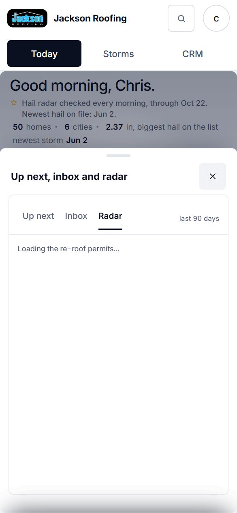
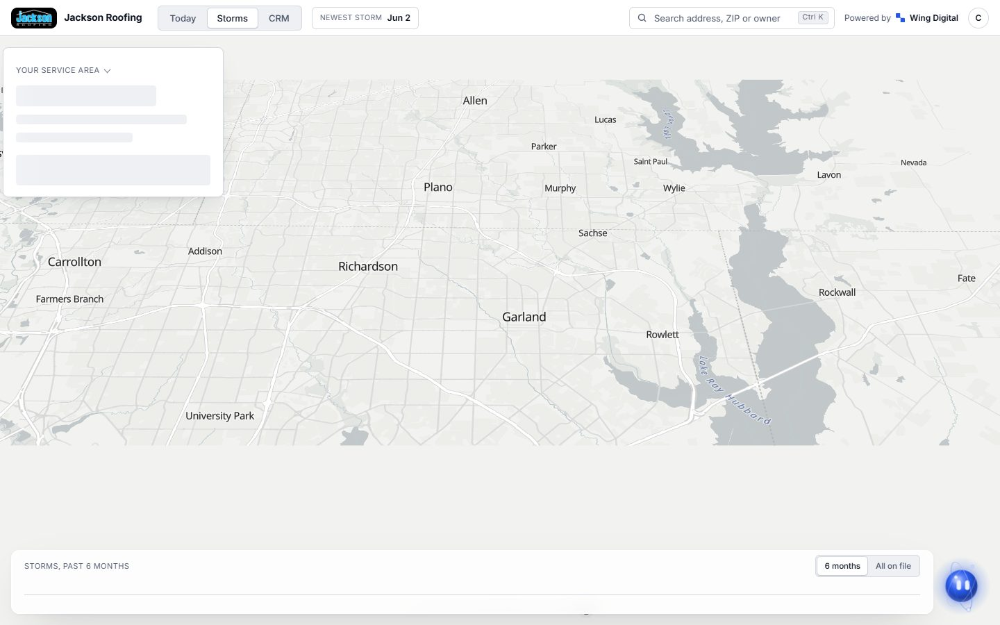
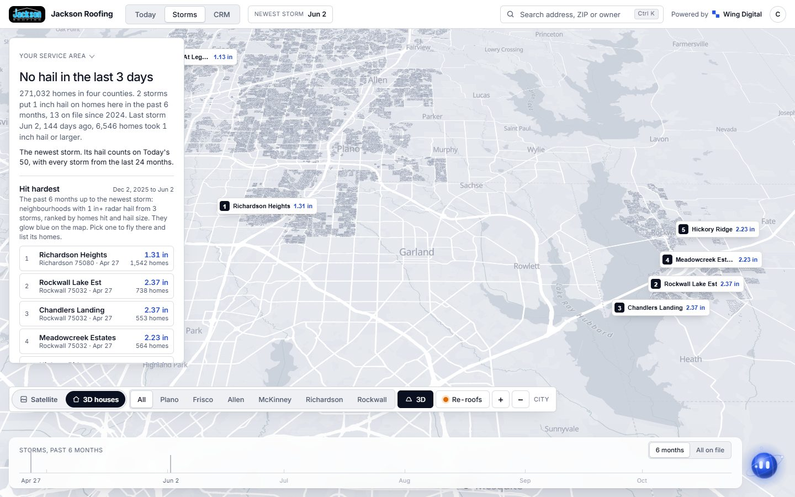
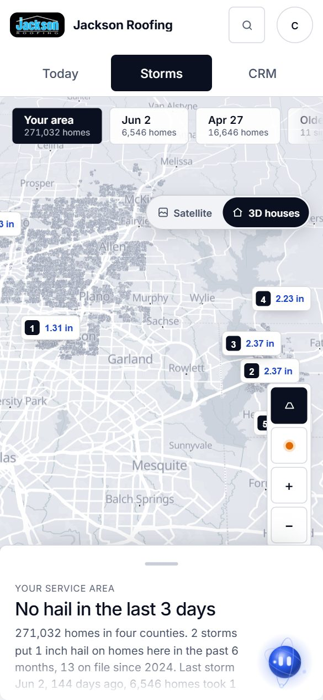
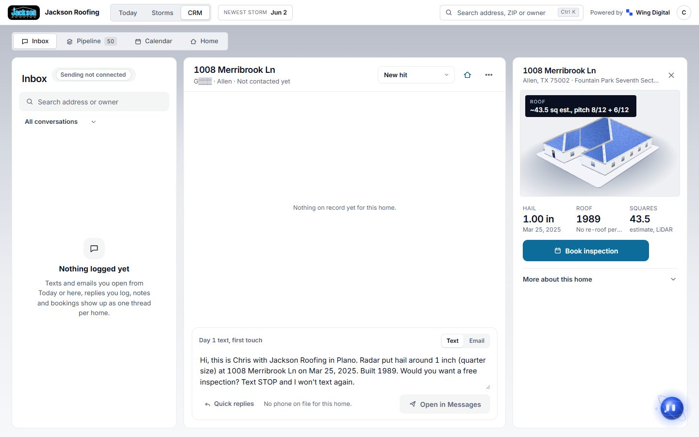
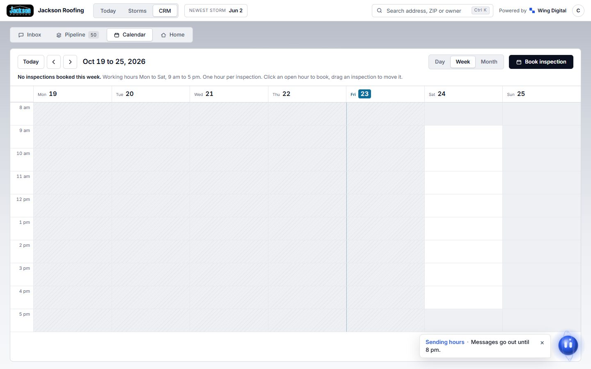
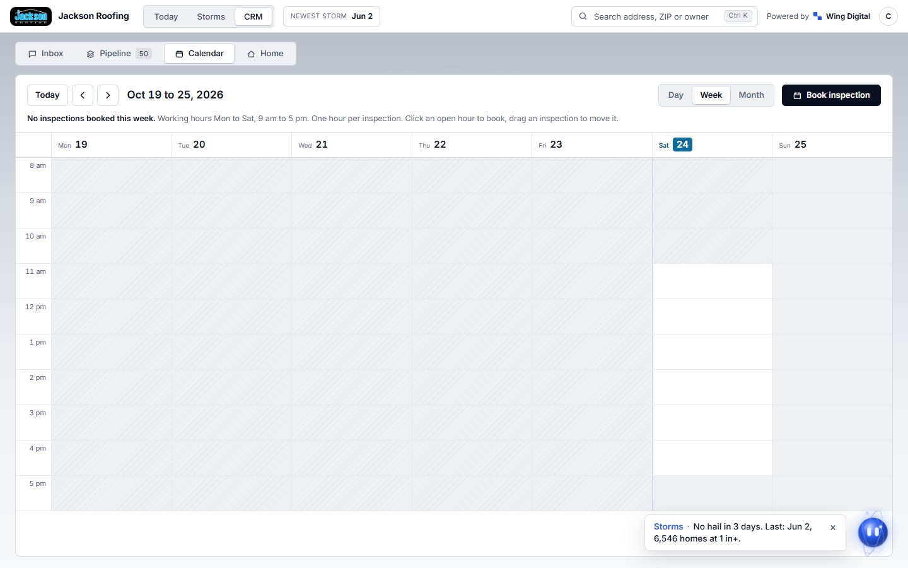

Visual check, Oct 23
Every screen clicked through like a rep and like the owner at desktop (1440) and phone (390), screenshotted, proofread for em dashes, placeholders and wording, and checked for sideways scroll and console errors. Clear layout and wording problems were fixed in small commits; product and legal calls are listed, not changed. App: open the app.
No sideways scroll on any screen at either width. No em dashes, 'undefined' or 'NaN' found in any screen's text. The squares note reads the standard wording on the record, Home facts, LiDAR tab and (now) the Today card.
Fixed (12)
| Where | Before | After | File |
|---|---|---|---|
| Today card | Squares chip used its own short wording ('~44 sq, LiDAR ~10% est., order a report before quoting') and rounded to whole squares while the CRM, record and Proof Page say 43.5. | Chip now reads the standard note: '~43.5 sq, LiDAR estimate, typically within about 10% of permit records; order a measurement report before you quote', one decimal like everywhere else, wraps inside the photo on desktop. | c4-command-deck/dk.js, deck.html |
| Today card, phone | The 3-line squares chip covered the 3D house; Email and Proof labels touched their button edges. | Phone chip shows '~43.5 sq, LiDAR estimate' only (the full note is on the record's key facts, Home facts and LiDAR tab); buttons get 6px gaps and slightly smaller text so all four fit at 390px. | deck.html |
| Today greeting | The how-we-help line jumped between above and below the stats line depending on which loaded first. | Always directly under 'Good evening, Chris.', stats line below it. | deck.html |
| Today greeting, phone | The stats line wrapped with a stray dot starting the second line ('· newest storm Jun 2'). | Wrapped lines never start with a dot (each fact carries its dot, the line's left edge is clipped). | c4-command-deck/features.css |
| Header search (every screen) | Placeholder was cut off at 1440: 'Search address, street, ZIP or'. | 'Search address, ZIP or owner' (the tooltip and screen-reader label still list street, subdivision and city). | lib/rc-find.js |
| Toast | 'Messages · Messages go out until 8 pm.' | 'Sending hours · Messages go out until 8 pm.' | lib/nimbus-shell.js |
| Pipeline | Stage total showed a decimal sum: '~2,843.3 sq (est.)'. | Whole squares: '~2,843 sq (est.)'. | c5-home/pipe.js |
| Calendar, phone | Said 'Click an open hour to book' on a touch screen. | 'Tap ...' on touch screens, 'Click ...' with a mouse. | c5-home/cal.js |
| Home record key facts | The Roof size card held the full squares note in a card the same width as the others: 8 lines tall, every card stretched to match with empty space. | Roof size card is wider (2.4x), the note wraps to about 3 lines and the row is a third of the height; full-width card on phone. | c5-home/rec.js, home.css |
| LiDAR measurements tab | Header and aerial photo sat flush against the card edge (no inset), unlike every other tab. | Same 24px inset as Measurements and Materials (16px on phone). | c5-home/home.css |
| Hail report | Desktop: the 'Every storm on file' table was squeezed into a third of the width by the roof table's long permit line, so dates wrapped ('Jun 2, / 2026'). Phone: chart labels clipped to "Mar '" and "Sep '". | Two even columns with wrapping lines; phone labels show in full (every other one, as before). | c5-home/hail-report.html |
| Nimbus panel | Chat text and chips sat 8px from the panel edge (a desktop -8px bleed carried into the panel layout). | 16px inset like the rest of the sheet. | c2-nimbus/index.html |
Follow-up fixes, Oct 24 (7)
| Where | Before | After | File |
|---|---|---|---|
| Proof Page hail card | Led with '1.03 in hail on May 27, 2024' and then said 'The biggest on file here was 1.38 in on May 22, 2024', which read as a contradiction. | 'Most recent 1 in+ hail' over the big number, then 'Biggest on file: May 22, 2024, 1.38 in' on its own line. | proof/proof.js, proof.css |
| Today Radar tab speed | Phone: sat on 'Loading the re-roof permits...' about 8 s after the tap. turnover.json (306 KB) was fetched twice: by the tidbits at startup and again by Radar only after the tap, on a busy page. | build_turnover.py also writes meta/turnover-streets.json (no per-home rows, no map dots, 120 KB). The tidbits fetch it once at startup and Radar reuses it; the full file loads only for the map dots. Phone list now 2.4 s after the tap (headless; mostly drawing time). Proof Page, Storms dots and the Daily 50 still read turnover.json. | scripts/permits/build_turnover.py, lib/rc-tips.js, c4-command-deck/radar.js |
| Storms 'Hit hardest' panel | British spelling in US copy: 'neighbourhoods', 'No neighbourhood took...'; also 'Neighbours reroofing' in Nimbus and 'The neighbour angle' on a Proof template note. | 'neighborhoods', 'Neighbors re-roofing', 'The neighbor angle'. | lib/st-hard.js, rc-ask.js, rc-proof.js |
| Today photo chip | A red square in front of the squares note that no longer meant anything. | Gone. | c4-command-deck/deck.html |
| Pipeline on phone | Stage grid cut 'Inspection booked' to 'Inspection bo...'. | Labels wrap to two lines. | c5-home/home.css |
| Home record Roof box | Two cells in a three-column grid: '8/12 + / 6/12' and '~54.2 est., / 2020 LiDAR' wrapped beside an empty third column. | One column per cell; '~54.2 est. (2020 LiDAR)' and '8/12 + 6/12' on one line each. | c5-home/home.css, home.js |
| Console error on every screen | The app checks a local sending server at 127.0.0.1:4911. | Left as is: it only runs on localhost and stops after two misses, so the live site never logs it. | lib/nb-react.js (no change) |
UI polish, Oct 24 (5)
| Where | Before | After | File |
|---|---|---|---|
| Home record sticky bar, phone | 'Add phone' took the bar's 54px button style, so the bar (reason line, Add phone, 4 buttons) covered about a fifth of the screen. | 'Add phone' is the small pill on the reason line again; buttons 48px. The bar is about half as tall. | c5-home/home.css |
| Today 3D house, phone | The house had a 220 x 58 slot partly under the squares chip, so it showed as a sliver. | Chip '~43.5 sq est.' moves to the top row beside 'Home 1 of 50'; the house gets the middle of the strip (248 x 81) with nothing over it; the card tidbit is one line (tap shows it all with its source). | c4-command-deck/deck.html, dk.js |
| Today map after a Radar street | The map flew to the street and showed only a stray spoke from the office. | The street's homes to knock show as ringed dots (orange dots are the re-roofs); hidden when the street closes or the tab changes. | c4-command-deck/radar.js |
| Nimbus panel | An empty grey band (6% of the map) above the chat sheet. | The full sheet fills the panel; dragging down still shows the map. | c2-nimbus/index.html |
| Storms timeline | The tallest storm tick ran up through 'Storms, past 6 months'. | Ticks are scaled to the room under the title; their heights keep their ratio. | 1b-storm-theater.html |
Left for Jack, by impact (4)
| What | Why it was not changed | |
|---|---|---|
| High | Proposal: the Texas Property Code 53.255 disclosure is a visible yellow '[Placeholder: the roofer inserts the required disclosure statement here...]' on the printable proposal. | Legal wording decision (Jackson's lawyer or the statute text). Not changed: wrong legal text is worse than a visible placeholder. |
| Medium | LiDAR measurements photo (USDA NAIP) is very pixelated at house zoom. | Needs the Esri World Imagery key (Jack to create; free tier allows commercial use with the key). |
| Medium | Desktop Storms takes about 52 s to fill in the software-rendered headless browser (every request slow alike); phone fills in under 15 s. | Not a loading-order bug (fix2/storm_probe.py). One look in a real desktop browser to confirm. |
| Low | Pipeline stage 'Sent to Chris' / 'Handed to Chris' uses the rep's first name as a stage. | Naming call. |
Every screen, before and after
Today
Up next list, greeting with the how-we-help line, home card with Text | Email | Proof | Skip, messages map
Desktop 1440
Phone 390
Today: Radar tab
Streets re-roofing now, 'See every re-roof on the Storms map' link
Desktop 1440
Phone 390

Today: Radar street opened
A street's homes listed under it
Desktop 1440
Phone 390
After 10-23

Storms map
Satellite | 3D houses switch, storm timeline (headless swiftshader, so tiles may be plain)
Desktop 1440
Before
No shot (the screenshot timed out on the slow laptop).
After 10-23

After fixes 10-24

Phone 390
Before
No shot (the screenshot timed out on the slow laptop).
After 10-23

CRM: Inbox
Thread, composer, home panel
Desktop 1440
After 10-23

Phone 390
CRM: Pipeline
Board with stage totals
Desktop 1440
Phone 390
CRM: Calendar
Week (desktop) and Day (phone)
Desktop 1440
Before

After 10-23

Phone 390
Home record (8620 Tuscan Oaks Dr)
Key facts row with blurred owner, house age, last hail, last re-roof, squares note; 3D roof; Home facts; hail
Desktop 1440
Phone 390
Before
No shot (the screenshot timed out on the slow laptop).
Home record: LiDAR measurements
Roof edges over the aerial photo
Desktop 1440
Phone 390
Proposal
Pricing inputs and the printable proposal
Desktop 1440

Homeowner hail report
Printable storm history
Homeowner Proof Page (preview)
tour/proof/?h=3ixhzvx&preview=1, records nothing


Nimbus (Ask panel)
Orb panel with the question chips